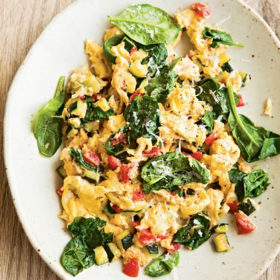

Farmer Scramble

We've all had those mornings. Yeah, 'those' mornings, you know the ones: your body is heavy you don't want to do much of anything, it's a day to be comfy.
Well, even on those days where you're running on Eco mode, you're still gonna need some kind of fuel to keep up the comfort levels, and this dish does just that.
It's lean and healthy yet hearty enough to keep you placated on a couch till your next lazy day. Take a stab at 'chill' with this easy to make Farmer Market Scramble. (Courtesy William Sonoma)
Ingredients
4 people
- 8 eggs
- 2 Tbs. nonfat milk
- Sea salt and freshly ground pepper, to taste
- 4 tsp. olive oil
- 1 small zucchini, trimmed and diced
- 1 ripe medium tomato, seeded and diced
- 1 cup firmly packed baby spinach leaves
- 1/4 cup grated pecorino Romano cheese
Preparation
-
In a bowl, whisk together the eggs, milk, and a pinch each of salt and pepper.
Continue whisking until the eggs are nice and frothy. Set aside.
-
In a nonstick fry pan over medium heat, warm the olive oil. Add the zucchini and another pinch of salt.
Cook, stirring, until just tender, about 1 minute. Add the tomato and stir to combine. Reduce the heat to
medium-low, add the egg mixture and cook, without stirring, until the eggs just begin to set,
about 1 minute. Using a heatproof rubber spatula, gently push the eggs around the pan, letting any uncooked
egg run onto the bottom of the pan.
-
When the eggs are about half-cooked, after 1 to 2 minutes more, add the spinach and cheese. Stir gently
to combine and continue cooking until the eggs are completely set but are still moist, about 1 minute more.
Transfer the scramble to a warmed platter and serve immediately. Serves 4.